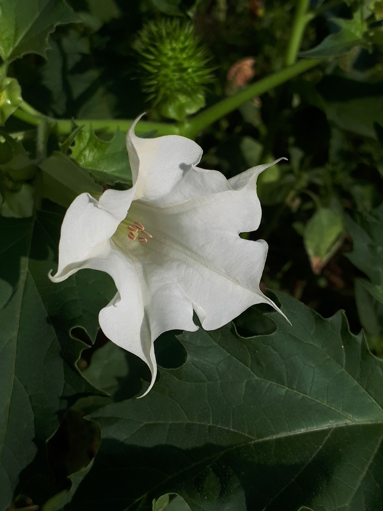

☠️
Deadly Beauties
Nature is full of wonders, but some of its most beautiful creations can also be the most dangerous.
Below are some of the most poisonous flowers you should never touch or ingest.
Admire their beauty, but remember: looks can be deceiving!
Monkshood (Aconitum)
Also known as wolfsbane, all parts of this plant are highly toxic and can cause heart failure if ingested.
- Symptoms: Numbness, vomiting, heart arrhythmia, paralysis.
- Used historically as a poison on arrows and spears.
- Even skin contact can cause poisoning.
Oleander (Nerium oleander)
One of the most poisonous commonly grown garden plants, even a small amount can be fatal if eaten.
- Symptoms: Nausea, vomiting, slowed heart rate, death.
- All parts are toxic, including smoke from burning branches.
- Used in traditional medicine, but extremely dangerous.
Angel's Trumpet (Brugmansia)
These large, fragrant flowers contain tropane alkaloids that can cause hallucinations, paralysis, and death.
- Symptoms: Dry mouth, confusion, hallucinations, paralysis.
- Sometimes used in shamanic rituals, but extremely dangerous.
- All parts are toxic, especially seeds and leaves.

Jimsonweed (Datura stramonium)
This plant contains tropane alkaloids, which are highly toxic and can be fatal if consumed.
- Symptoms: Delirium, hallucinations, hyperthermia, death.
- Sometimes used in folk medicine, but very dangerous.
- Also called "Devil's Trumpet" due to its shape and effects.
Foxglove (Digitalis purpurea)
Contains digitalis, which affects the heart and can be deadly in high doses.
- Symptoms: Nausea, vomiting, irregular heartbeat, death.
- Source of the heart medication digoxin (in controlled doses).
- All parts are toxic, especially the leaves.

Red Spider Lily (Lycoris radiata)
Known for its striking red flowers, this plant is beautiful but contains potent toxins.
- Symptoms: Vomiting, diarrhea, abdominal pain, convulsions.
- Bulbs are especially toxic if ingested.
- Often associated with death in Japanese folklore and planted near cemeteries.